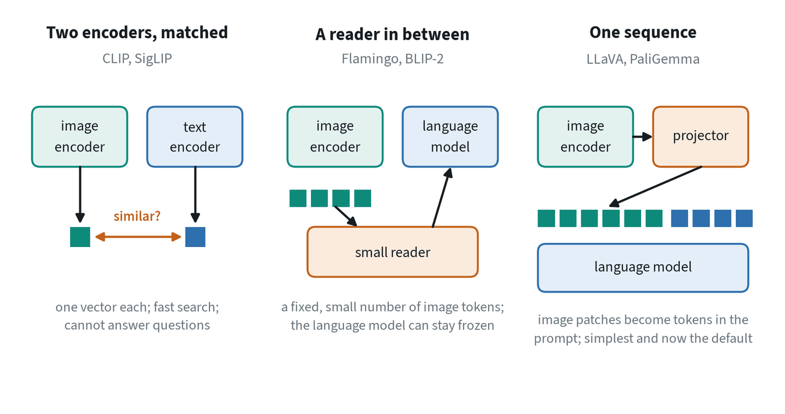
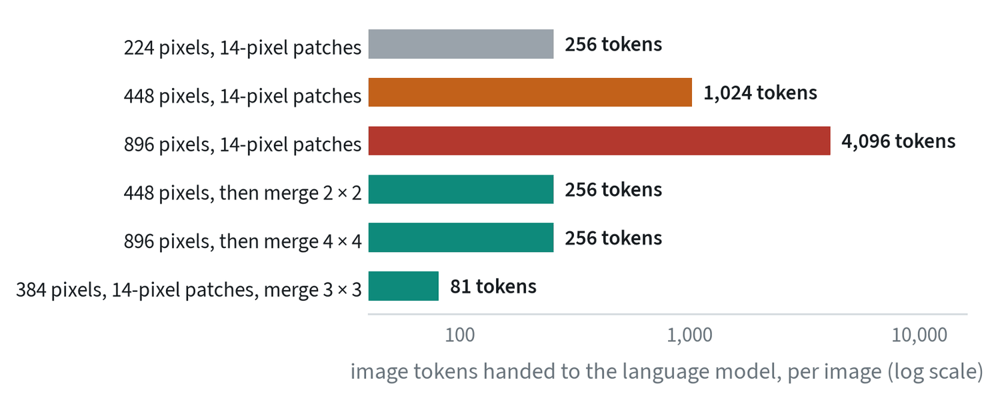
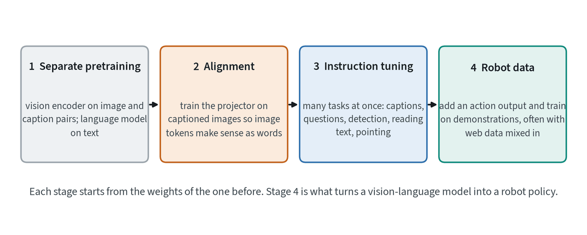
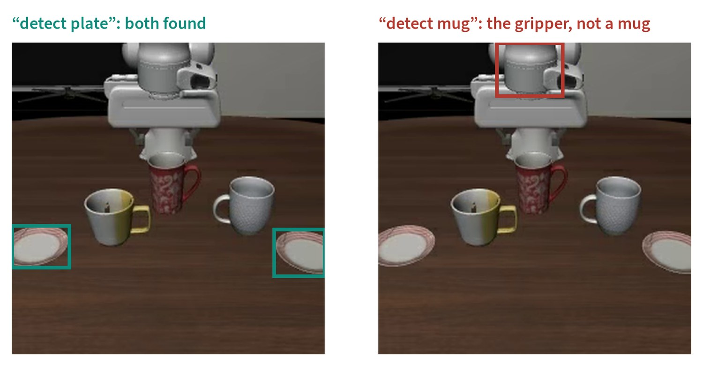

What a vision-language model is
A vision-language model, or VLM, is a language model that can also read images. Give it a picture and a question and it writes an answer. It is one of the two backbones that robot foundation models are built on. The other, the diffusion model, is covered in its own note.
A VLM is valuable to robotics for what it already knows. It has read a large part of the internet and seen billions of captioned images, so it arrives knowing what a mug is, what “left of” means, and that a drawer has to be opened before something is put in it. A robot policy built on it inherits all of that and only has to learn how to move.
Three ways to join vision and language


| Two encoders | A reader in between | One sequence | |
|---|---|---|---|
| Image enters as | One vector | A small fixed set of tokens | Hundreds of patch tokens |
| Can generate text | No | Yes | Yes |
| New parts to train | Both encoders | The reader, and cross-attention layers | One small projector |
| Cost per image | Lowest | Low | Highest: the tokens fill the prompt |
| Fine spatial detail | Lost | Partly kept | Best kept |
| Used for | Retrieval, zero-shot labels | Many images or video on a budget | General assistants, robot policies |
The single-sequence design won on simplicity. It adds almost nothing to a language model, it reuses the language model’s attention to relate words to patches, and it improves automatically when either half is replaced with a better one. The note on attention shows a real example of a word attending to the right patches.
The image is the expensive part


A sentence is a few dozen tokens. An image is hundreds or thousands, and the language model’s cost grows faster than its token count. Every VLM design is therefore a decision about how many image tokens to spend, and the answer shapes what the model can see.
- Low resolution. Cheap, and small objects and text vanish. A gripper’s fingertips can be a handful of pixels.
- High resolution. Sees detail, at four times the tokens for each doubling.
- Tiling. Cut a large image into tiles, encode each at the encoder’s native size, and add a low-resolution overview. Detail is kept and the token count multiplies.
- Merging and pooling. Combine each small block of neighbouring patch features into one token before the language model. The encoder still sees full resolution, and the language model pays for far fewer tokens.
- A reader. Compress to a fixed count regardless of resolution, at some loss of spatial precision.
Robot policies sit at the frugal end. They need several cameras, many times a second, so they use low resolution or heavy merging, and often a compact model. The deployment note measures what each choice costs in time.
How one is trained


The vision encoder and the language model are trained separately first, each on its own enormous dataset. The vision encoder is usually trained contrastively against captions, as the note on contrastive learning describes, which is why its features already line up with language. Alignment then trains only the projector, on captioned images, until image tokens are usable by the language model. Instruction tuning trains on a mixture of tasks phrased as instructions, with more of the model unfrozen.
What gets frozen at each stage is a real decision. Freezing the vision encoder preserves its general features and limits how far it can adapt to, say, the view from a wrist camera. Unfreezing everything adapts fully and risks forgetting.
Beyond text answers
A language model can only emit tokens, so every other output is written as tokens. Locations are the important case for robots. Some models add special location tokens to their vocabulary, a thousand or so values per axis, and a box becomes four of them. Others write coordinates as ordinary numbers or output points.


The same idea carries straight through to robot control. If a location can be a token, so can an action, and a VLM that writes action tokens is the simplest kind of robot policy.
What they get wrong
Asked about the same frame, two public models gave these answers. There are three mugs on the table, and the mug on the left is white and yellow.
| Question | Model | Answer |
|---|---|---|
| Describe the image | PaliGemma | “a robot’s hand picks up a cup and puts it on a saucer” |
| Describe the image | SmolVLM2 | “A coffee maker is on a table with two cups and a plate.” |
| How many mugs are on the table? | PaliGemma | “couple” |
| How many mugs are on the table? | SmolVLM2 | “There are two mugs on the table.” |
| What colour is the mug on the left? | PaliGemma | “red” |
Each answer is fluent and each is wrong in a way that would matter to a robot. Both miscount. One takes the robot’s gripper for a coffee maker. The colour named belongs to a different mug. These are small models on a simulated image, and larger models do better, but the kinds of error are typical.
- Counting and spatial relations. Left, right, behind and how many are consistently the weakest skills.
- Fine detail at low resolution. What the vision encoder discards, the language model cannot recover.
- Unfamiliar views. Wrist cameras, simulation and robot hardware are rare in web data.
- Confident invention. The model answers in the same tone whether or not it can see the thing.
- No sense of force or time. A single image says nothing about weight, friction or what happened a moment ago.
From a VLM to a robot policy
Turning a VLM into a policy means giving it a way to output actions, and there are three ways in use.
- Action tokens. Write each action as tokens from the vocabulary and train on demonstrations. Nothing is added to the architecture.
- An action head. Attach a small network that reads the VLM’s internal features and generates continuous actions, usually by flow matching. The VLM’s language abilities are left largely intact.
- A planner above a policy. Leave the VLM as it is and have it name sub-tasks for a separate low-level policy.
A further practice is co-training: continuing to train on web image-and-text tasks alongside the robot data, so that learning to act does not erase what the model knew about the world. The note on robot policies covers all of these in detail.
Common mistakes
- Choosing the resolution last. It decides what the model can see and how fast it runs. Decide it first.
- Trusting a description. Check counts, colours and positions against the image before acting on them.
- Fine-tuning on robot data alone. The model’s general knowledge erodes. Mix in the data it was built on.
Terms
- Vision-language model
- A language model that takes images as well as text as input.
- Projector
- The small layer that maps image features into the language model’s token space.
- Alignment
- The training stage that teaches a language model to use image tokens.
- Instruction tuning
- Training on many tasks phrased as instructions.
- Location token
- A vocabulary entry that stands for a coordinate, used to write boxes and points.
- Co-training
- Training on robot data and web data together.
Further reading
- Radford et al., 2021. Learning Transferable Visual Models From Natural Language Supervision (CLIP).
- Alayrac et al., 2022. Flamingo: a Visual Language Model for Few-Shot Learning.
- Li et al., 2023. BLIP-2: Bootstrapping Language-Image Pre-training with Frozen Image Encoders and Large Language Models.
- Liu et al., 2023. Visual Instruction Tuning (LLaVA).
- Beyer et al., 2024. PaliGemma: A versatile 3B VLM for transfer.
- Marafioti et al., 2025. SmolVLM: Redefining small and efficient multimodal models.
- Brohan et al., 2023. RT-2: Vision-Language-Action Models Transfer Web Knowledge to Robotic Control.